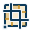
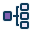

01GeoTools
ACHT PLUGINS. EINE DESIGNSPRACHE.
Geometrie, die
man lesen kann.
Die Form zeigt die Daten.
Das Zeichen zeigt die Aufgabe.
Die Farbe verbindet die Familie.
Zehn SVG-Muster für deine Apache-Hop-Plugins. Klare Konturen, gezielte Farbflächen und dieselbe Logik vom Reader bis zum Geometry Inspector.
Zum vollständigen StilblattVektor & Geometrie
#168C87Raster
#C58A20INTERLIS & Modell
#8061B2Datenbank
#397DB801 / DIE MUSTER
Eine Familie. Zehn Aufgaben.
{kind=link}
02GeoTools
{kind=link}
03GDAL

{kind=link}
04GeoTools
{kind=link}
05INTERLIS
{kind=link}
06INTERLIS

{kind=link}
07ili2db
{kind=link}
08Inspector
{kind=link}
09Calculator
{kind=link}
10Geoprocessing
{kind=link}
Keine passenden Icons. Versuche „Raster“, „Lesen“ oder „Inspector“.
Kreis = GeoTools Quadrat = GDAL
Die Marke zeigt die Plugin-Suite. Das Hauptmotiv bleibt bei gleicher Aufgabe identisch.
02 / DIE GRAMMATIK
Wiedererkennen statt nachdenken.
Richtung ist Bedeutung.
Lesen führt aus der Quelle heraus. Schreiben führt ins Ziel hinein. Das Polygon und seine Farbe bleiben gleich.
Die Form trägt die Aufgabe.
Betrachten und Berechnen gehören zur gleichen Geometriefamilie. Lupe und Rechner unterscheiden die Tätigkeiten.
Auch im Menü lesbar.
Diese Menüzeile ist eine Gestaltungssimulation. Der Inspector wird auch als 16-Pixel-Menüeintrag beurteilt. Sein Polygon und seine Lupe bleiben das Erkennungszeichen.
03 / GEOPROCESSING WEITERDENKEN
Prüfen. Überlagern. Flächen verbinden.
Motivstudien für die Erweiterung der Familie. Predicate und Coverage sind hier Konstruktionsskizzen; die zehn fertigen Muster stehen oben.
Spatial Predicate
Beziehungen prüfen. Beide Ausgangskonturen bleiben sichtbar; ein Häkchen kennzeichnet die Prüfung.
Layer Overlay
Geometrien verschneiden. Die gemeinsame Fläche steht im Mittelpunkt.
Coverage Operation
Zusammenhängende Polygonflächen bearbeiten. Unregelmässige Grenzen unterscheiden Coverage vom Raster.
04 / DIE GRÖSSENPROBE
Vom Menü bis zur Pipeline.
Die Icons stehen hier gleichzeitig in allen vier Grössen. Hintergrund und Graustufen werden von den Reglern oben übernommen.
| Icon | 16 px | 24 px | 32 px | 64 px |
|---|---|---|---|---|
| GeoTools Vector Reader | ||||
| GeoTools Vector Writer | ||||
| GDAL Raster Clip | ||||
| GeoTools Raster Clip | ||||
| INTERLIS Input | ||||
| INTERLIS Structure Explode | ||||
| ili2db Transform | ||||
| Geometry Inspector | ||||
| Geometry Calculator | ||||
| Layer Overlay |